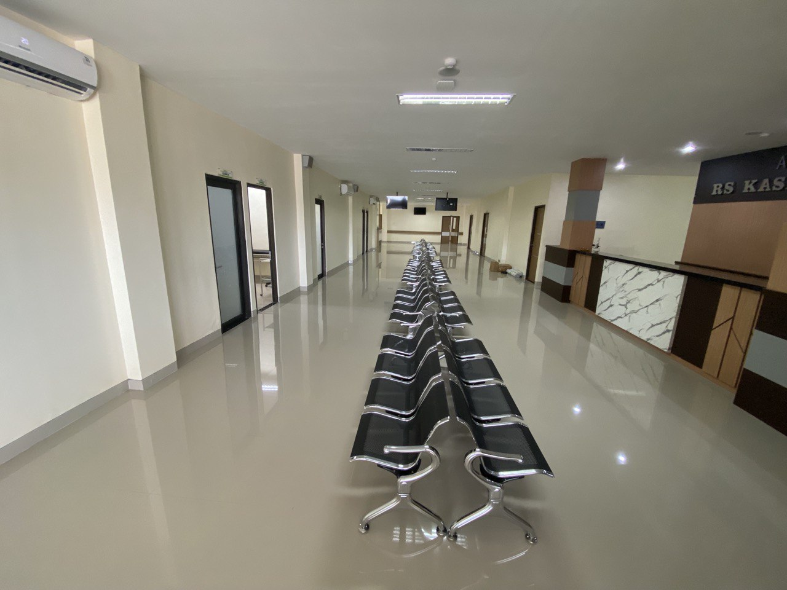
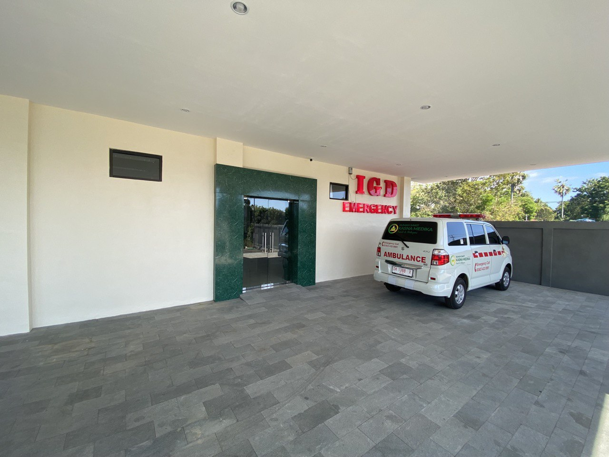
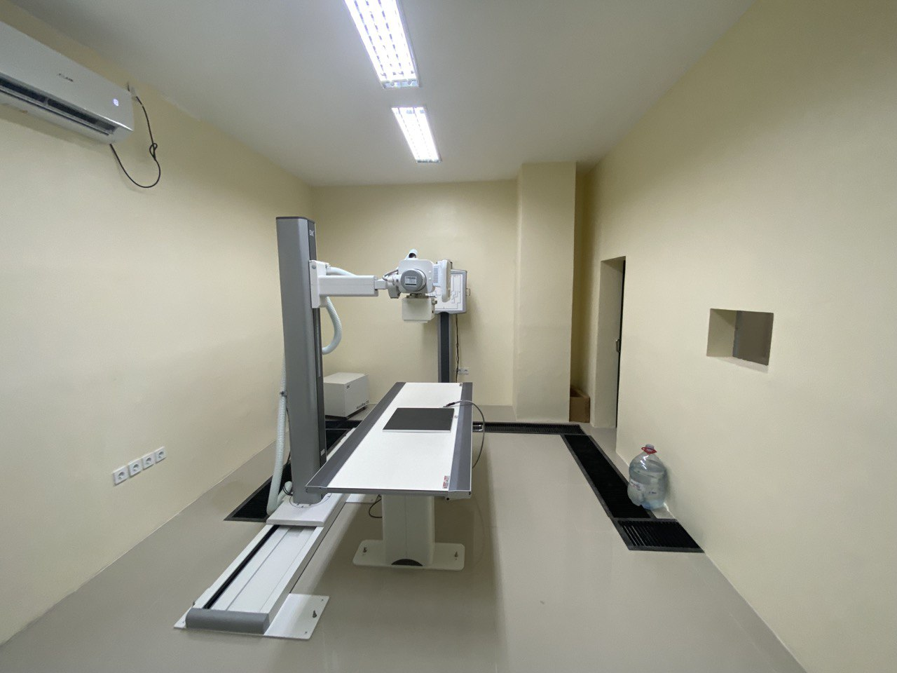
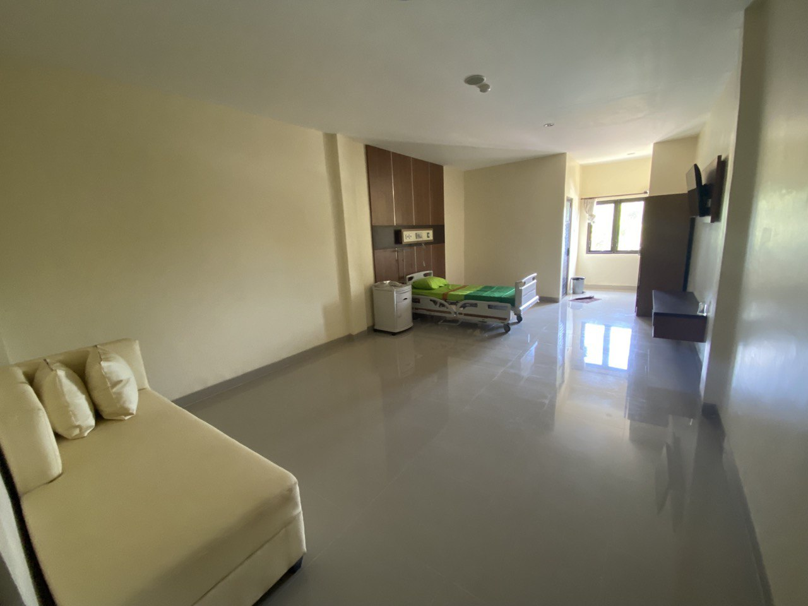
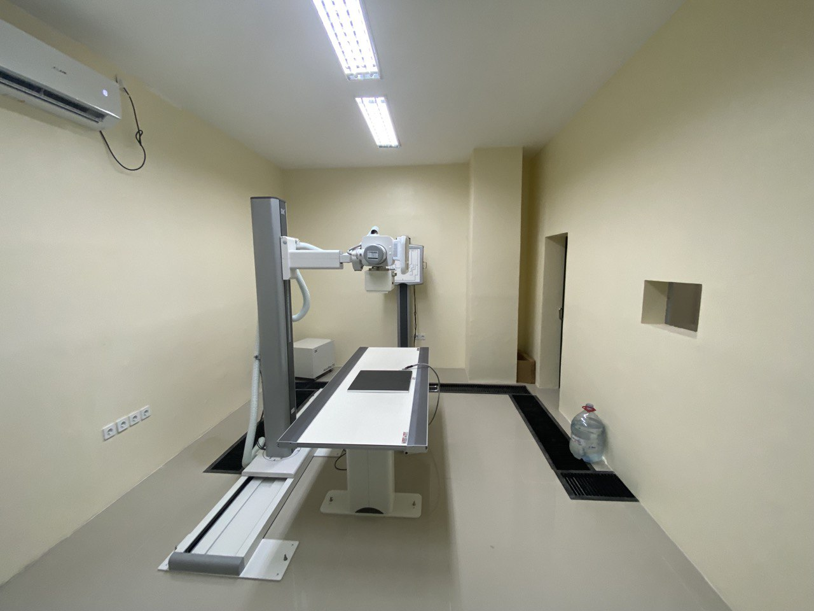
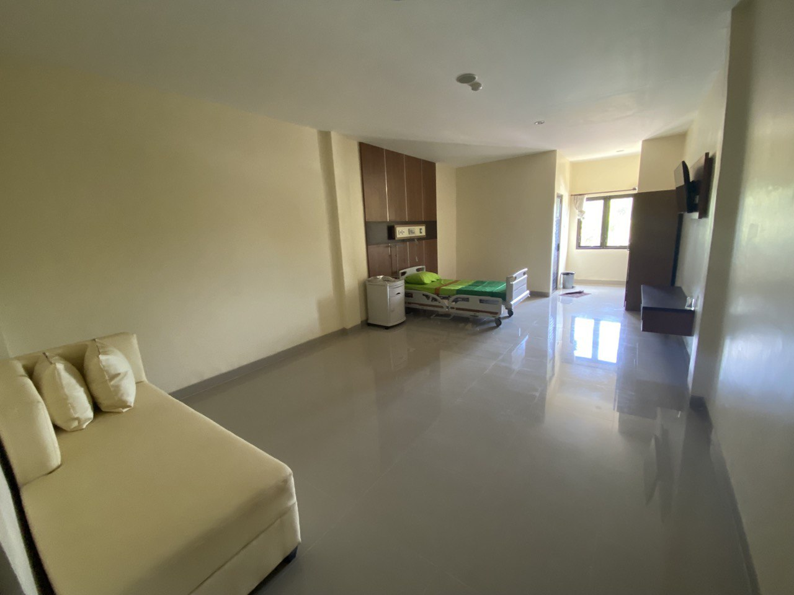
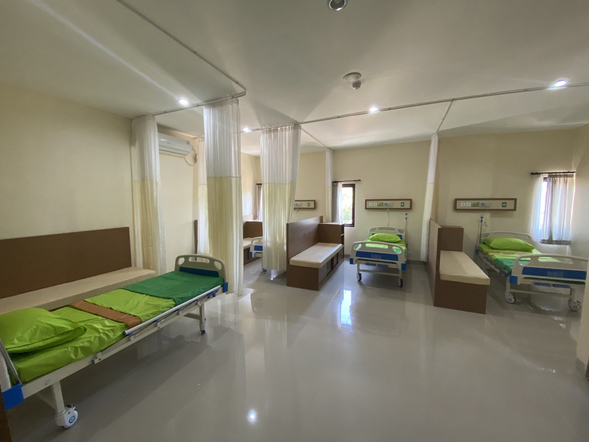
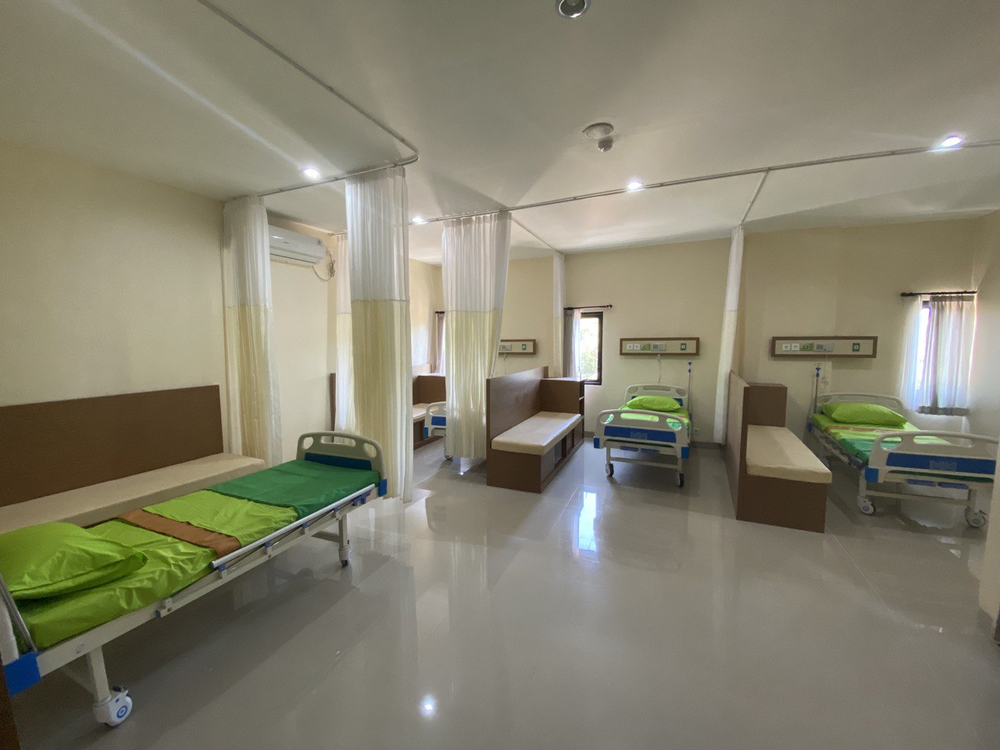

RS Kasna Medika Resmi Buka Layanan Lengkap Mulai 1 Juli 2024
Dipublikasikan pada 1 juli 2024
  



 



Mulai tanggal 1 Juli 2024, Rumah Sakit Kasna Medika resmi membuka berbagai layanan kesehatan baru untuk masyarakat. Pembukaan ini menjadi langkah penting dalam upaya memberikan pelayanan kesehatan yang lebih lengkap, modern, dan terjangkau bagi seluruh lapisan masyarakat. Layanan yang kini telah tersedia di RS Kasna Medika meliputi:
Klinik Spesialis, dengan tenaga dokter ahli di berbagai bidang untuk menangani beragam keluhan kesehatan secara profesional.
Kamar Operasi yang didukung fasilitas steril dan modern untuk mendukung tindakan bedah dengan keamanan tinggi.
Layanan Radiologi dengan teknologi pencitraan medis seperti X-Ray dan USG untuk membantu diagnosis secara cepat dan akurat.
Ruang Bersalin yang nyaman dan aman bagi ibu dan bayi, dengan dukungan bidan serta dokter spesialis kandungan.
Ruang Rawat Inap yang dirancang nyaman, bersih, dan tenang agar pasien dapat beristirahat serta pulih dengan optimal.
Dengan hadirnya layanan-layanan baru ini, RS Kasna Medika berkomitmen untuk menjadi mitra kesehatan terpercaya bagi masyarakat. Harapannya, warga tidak perlu lagi menempuh perjalanan jauh untuk mendapatkan pelayanan medis lengkap, karena semua kebutuhan kesehatan kini dapat terpenuhi di satu tempat. RS Kasna Medika juga terus berupaya meningkatkan mutu pelayanan melalui pelatihan tenaga medis, peningkatan fasilitas, serta penerapan sistem pelayanan yang cepat dan ramah. Melalui langkah besar ini, RS Kasna Medika mengajak seluruh masyarakat untuk bersama-sama menjaga kesehatan, karena “Kesehatan Anda, Prioritas Kami.”
⬅ Kembali